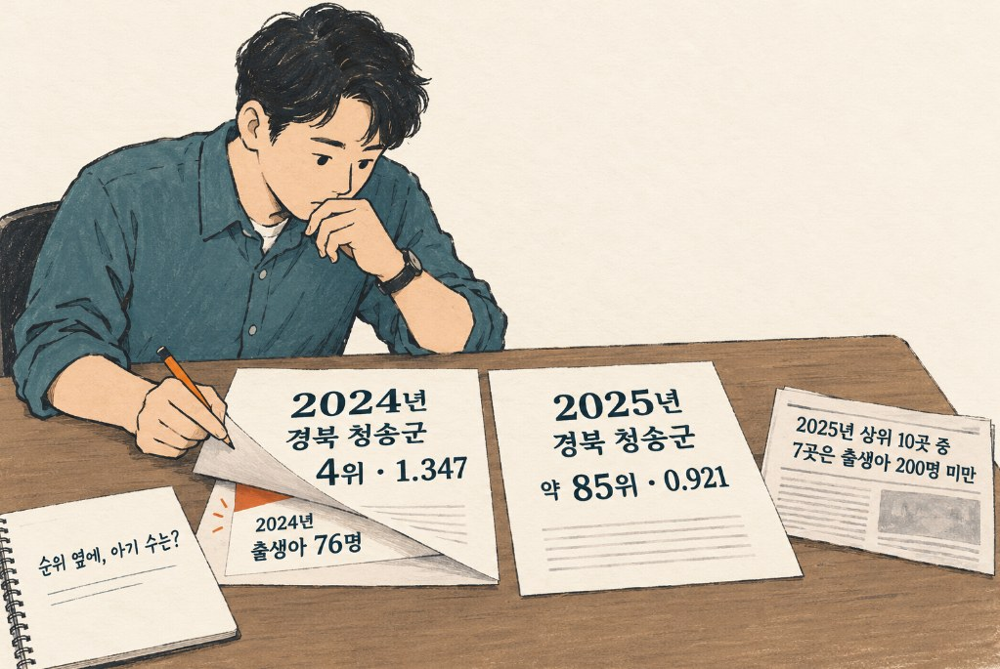
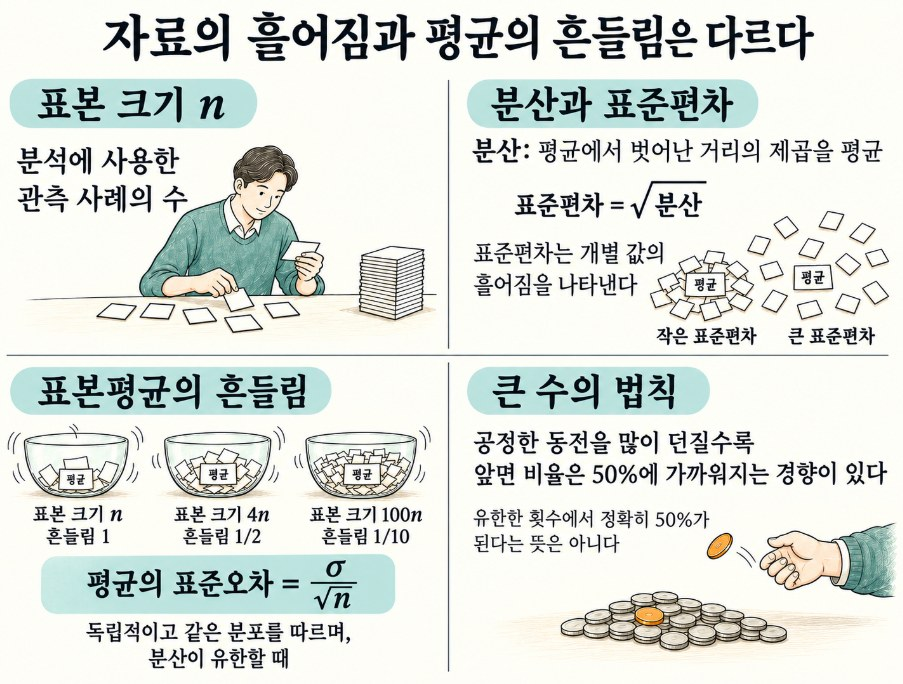
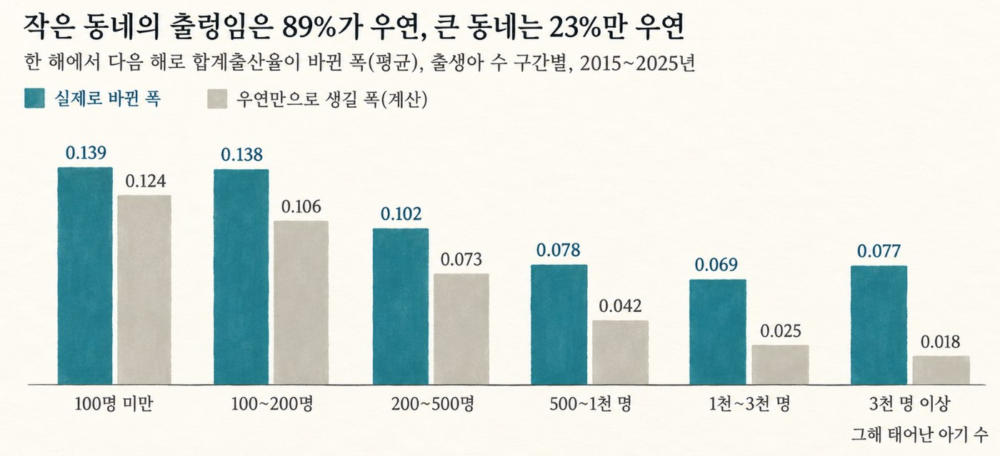
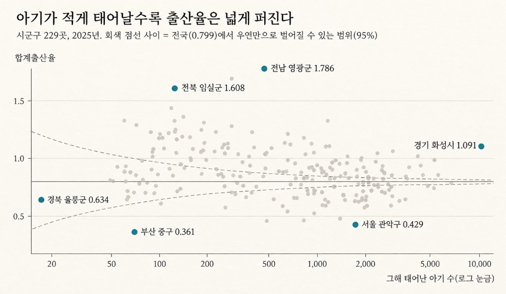

[그 숫자, 누가 셌어요? 5] 출산율 1등 동네는 운이 좋았을까
출산율 상위 10곳 중 7곳은 아기가 200명도 안 태어난 동네. 표본이 작으면 숫자가 얼마나 튀는지 살펴봅니다.
그 숫자, 누가 셌어요? · 8편 중 6번째 글
연재 목차 보기
대표가 준비 중인 책 『그 숫자, 누가 셌어요?』의 원고를 연재합니다. 숫자는 모두 한국의 공개 자료를 내려받아 대표가 직접 다시 계산했습니다. 자료는 저장소에서 받을 수 있습니다.
이사 갈 동네를 고르다 보면 여러 순위표를 만납니다. 해마다 기사로 나오는 출산율 순위도 그중 하나입니다. 1위 동네는 아이 키우기 좋은 곳처럼 보이고, 꼴찌 동네는 무언가 부족한 곳처럼 보입니다. 그런데 한 해 상위권이던 곳이 이듬해 중간쯤으로 미끄러지는 일도 드물지 않다면, 이 순위표는 동네의 무엇을 보여 주고 있는 걸까요?
1위는 영광군, 꼴찌는 부산 중구
해마다 출생 통계가 나오면 빠지지 않는 기사가 있습니다. 출산율 1위 동네와 꼴찌 동네.
2025년 숫자로 보면 이렇습니다. 전국 합계출산율은 0.799. 1위는 전남 영광군으로 1.786, 전국의 두 배가 넘습니다. 2위 장성군(1.692), 3위 강진군(1.647)도 전남입니다. 꼴찌는 부산 중구로 0.361, 그 위로 서울 관악구(0.429)와 종로구(0.465)가 있습니다.
이런 순위를 보면 자연스럽게 이유를 찾게 됩니다. 1위 군은 출산 지원금을 많이 주나, 꼴찌 구는 집값이 비싸서일까. 순위를 성과로 내세우는 지자체도 있습니다.
그런데 이 순위표에는 잘 보이지 않는 숨은 숫자가 하나 있습니다. 그해 그 동네에서 태어난 아기가 몇 명이냐는 것입니다.
순위는 그 동네의 실력이다?
우리는 순위표를 실력표로 읽습니다. 학교 성적 순위가 실력을, 프로야구 순위가 팀의 강함을 보여 주듯이, 출산율 순위는 그 동네가 아이 키우기 얼마나 좋은지를 보여 준다고 생각합니다.
그렇다면 순위는 해마다 크게 바뀌지 않아야 합니다. 동네의 집값도, 일자리도, 지원 제도도 1년 만에 크게 바뀌지는 않으니까요.
그런데 작년 순위표와 올해 순위표를 나란히 놓으면 이상한 일이 보입니다.
4위에서 85위로
2024년 출산율 4위는 경북 청송군이었습니다. 1.347. 그런데 1년 뒤인 2025년에는 0.921로 떨어져 85위 근처까지 내려갔습니다. 2024년 3위였던 강원 화천군도 1.505에서 1.222로, 17위가 됐습니다.

청송군에서 2024년에 태어난 아기는 76명, 화천군은 155명입니다. 서울의 한 구에서 석 달 동안 태어나는 수보다 적습니다.
순위표 맨 위를 다시 보면 이런 동네가 많습니다. 2025년 출산율 상위 10곳 가운데 7곳이 그해 아기가 200명도 안 태어난 곳입니다. 전체 229곳 중 이런 곳은 28%뿐인데요. 꼴찌 부산 중구도 2025년에 태어난 아기가 69명입니다.
작은 동네의 출산율은 해마다 크게 튀기도 합니다. 2015~2025년 사이 한 해에서 다음 해로 넘어갈 때 출산율이 바뀐 폭을 보면, 아기가 1년에 100명도 안 태어나는 곳은 평균 0.139, 3,000명 넘게 태어나는 곳은 0.077이었습니다. 거의 두 배입니다.
작은 동네의 삶이 큰 동네보다 해마다 두 배로 크게 바뀔 리는 없습니다. 숫자를 흔든 것은 다른 무엇입니다.
아기 10명의 무게
합계출산율은 그해 태어난 아기 수를 가임기 여성 수로 나눠 계산합니다. 여성 수가 같다면 아기가 10% 더 태어날 때 출산율도 대략 10% 오릅니다.
같은 아기 10명도 어느 동네에 더하느냐에 따라 무게가 다릅니다. 2025년 부산 중구에서는 69명이 태어났습니다. 여기에 10명이 더 태어났다면 출산율은 약 14% 오릅니다. 서울 관악구에서는 1,649명이 태어났습니다. 여기에 10명이 더해져도 0.6% 오르는 데 그칩니다.
두세 쌍의 부부가 올해 낳을지 내년에 낳을지, 쌍둥이가 태어났는지, 젊은 가족 몇 집이 이사를 왔는지. 큰 동네에서는 묻혀 버리는 일들이 작은 동네에서는 출산율을 크게 움직입니다. 동네 형편은 그대로인데 우연히 일어난 작은 일들이 숨을 곳 없이 드러나는 것입니다.
동전 던지기와 같습니다. 동전을 10번 던지면 앞면이 8번 나오는 일도 드물지 않지만, 1,000번 던져서 800번 나오는 일은 사실상 일어나지 않습니다. 던지는 횟수가 적을수록 결과는 극단으로 자주 튀고, 그래서 순위표의 맨 위와 맨 아래에 자주 올라갑니다.
알아두면 좋은 통계 · 표본 크기와 분산, 그리고 흔들림의 원리
통계 데이터에서 숫자가 왜 이토록 널뛰듯 변하는지 깊이 이해하려면 '표본 크기', '분산', 그리고 '표준편차'의 관계를 구체적으로 뜯어봐야 합니다.

표본 크기 (n)
- 통계를 계산할 때 바탕이 되는 전체 사례나 데이터의 개수를 의미합니다.
- 출산율 통계에서 표본 크기는 바로 "그해 해당 지역에서 태어난 아기의 수"가 됩니다.
분산 (Variance) 과 표준편차 (Standard Deviation)
- 분산: 데이터의 값들이 전체 평균으로부터 얼마나 넓게 흩어져 있는지, 그 '거리의 제곱'을 평균 낸 값입니다. 값이 넓게 퍼져 있을수록 분산은 커집니다.
- 표준편차: 분산에 양의 제곱근(루트)을 씌워 원래의 단위로 되돌린 값입니다. 통계학에서 이 표준편차는 데이터가 무작위로 흔들리는 '변동의 폭(오차 범위)' 그 자체를 의미합니다.
표본 크기와 흔들림의 관계 (제곱근 반비례 법칙)
통계학에는 표본의 크기와 우연에 의한 흔들림(오차) 사이를 지배하는 엄격한 수학적 규칙이 있습니다. 우연에 의한 흔들림의 크기는 정확히 '표본 크기의 제곱근'에 반비례합니다.
우연에 따른 흔들림 공식
흔들림의 폭 ≒ (자료의 흩어짐) ÷ √(표본 크기)
이 규칙 때문에 표본 크기에 따라 흔들림의 크기가 크게 달라집니다.
- 표본의 크기가 4배 커지면, 우연에 의한 흔들림은 정확히 절반(1/2)으로 줄어듭니다.
- 표본의 크기가 100배 커지면, 우연에 의한 흔들림은 10분의 1(1/10)로 쪼그라듭니다.
큰 수의 법칙 (Law of Large Numbers)
- 관측하는 횟수나 표본의 크기가 무수히 커질수록, 우연에 의한 임시 변동들은 서로 상쇄되고 데이터는 진짜 참값(기댓값)에 수렴하게 되는 통계적 성질입니다.
- 동전을 10번만 던지면 앞면이 8번 나오는 편향이 쉽게 일어나지만, 10,000번을 던지면 결과가 정확히 50%에 수렴하는 것과 같은 이치입니다.
출산율 순위표가 매년 널뛰는 진짜 이유
- 대도시 (서울 관악구 등): 태어나는 아기가 수천 명에 달해 표본 크기(n)가 큽니다. 따라서 큰 수의 법칙이 강력하게 작용하여 매년 출산율과 순위가 안정적으로 유지됩니다.
- 소규모 지역 (전남 영광군, 경북 청송군 등): 그해 태어나는 아기가 100~200명 안팎으로 표본 크기가 매우 작습니다. 모수가 작기 때문에 표준편차(흔들림의 폭)가 커집니다. 이로 인해 동네의 실제 육아 환경은 1년 동안 전혀 바뀌지 않았더라도, 쌍둥이 몇 쌍이 태어나거나 젊은 부부 몇 세대가 이사 온 것 같은 사소한 우연만으로도 출산율 수치가 크게 오르거나 내리게 됩니다.
결국 출산율 순위표 맨 위에 오른 동네의 비밀은 비범한 행정 실력이라기보다, 작은 표본 속에서 우연히 '당첨'된 통계적 확률의 마술에 가깝습니다. (그림 5-3).

아기가 100명도 안 태어나는 곳은 실제로 바뀐 폭(0.139)과 우연만으로 생길 폭(0.124)이 거의 같습니다. 작은 동네의 출렁임은 대부분 우연으로 설명된다는 뜻입니다. 반대로 3,000명 넘게 태어나는 큰 동네는 우연으로 생길 폭이 0.018밖에 안 됩니다. 그런데도 실제로는 0.077씩 바뀌었으니, 큰 동네의 변화는 대부분 진짜 변화입니다.
같은 0.1의 변화도 작은 동네에서는 흔한 우연이고, 큰 동네에서는 눈여겨볼 신호입니다.
229개 시군구를 한 그림에
2025년 229개 시군구를 그림 5-4에 놓았습니다. 가로는 그해 태어난 아기 수, 세로는 합계출산율입니다. 점선은 전국 출산율 0.799에서 우연만으로 벌어질 수 있는 범위입니다. 아기 수가 적을수록 범위가 넓어져 깔때기 모양이 됩니다.

점들도 깔때기를 닮았습니다. 출생아 200명 이하인 시군구의 출산율 표준편차는 0.25였지만, 1,000명이 넘는 곳은 0.15였습니다. 작은 동네일수록 점들이 훨씬 넓게 퍼져 있습니다.
점선 밖으로 벗어난 점들은 단순한 우연만으로는 설명하기 어렵다는 뜻입니다. 실제로 비율을 따져 보니, 아기가 200명 이하인 동네는 54%만 점선 밖에 있었고, 1,000명이 넘는 동네는 82%가 점선 밖으로 나갔습니다. 즉, 큰 동네의 수치가 전국 평균과 다르다면 대개 진짜 차이인 반면, 작은 동네는 절반 가까이가 우연의 범위 안에 머뭅니다.
그림 5-4의 왼쪽 아래에 있는 경북 울릉군을 볼까요? 2025년 기준 태어난 아기는 17명, 출산율은 0.634로 전국 평균보다 한참 낮지만 여전히 점선 안에 들어 있습니다. 바로 전해인 2024년에는 34명이 태어나 출산율이 1.075였습니다. 단 17명의 차이가 출산율을 절반 가까이 뒤흔든 것입니다.
반면에 오른쪽에 위치한 경기 화성시는 태어난 아기가 8,012명이고 출산율은 1.091입니다. 전국 평균과의 차이 자체는 울릉군보다 작지만, 점선에서 멀리 비껴나 있습니다. 이 정도의 차이는 결코 우연으로 볼 수 없습니다.
작다고 다 운은 아니다
여기까지 읽으면 "작은 군의 출산율 1위는 그냥 운이 좋아 생긴 결과구나"라고 손쉽게 정리하고 싶어집니다. 저 역시 처음에는 그런 결론을 예상했습니다. 하지만 실제로 데이터를 세어 보니 꼭 그렇지만은 않았습니다.
먼저 순위가 얼마나 꾸준히 유지되는지 살펴보았습니다. 2015년부터 2024년까지 매년 상위 10곳에 든 동네가 그다음 해에도 계속 상위 10곳에 살아남은 비율을 계산해 보니, 아기가 200명 미만으로 태어나는 작은 곳은 62%, 그보다 큰 곳은 60%였습니다. 동네가 작다고 해서 상위권에서 유독 쉽게 미끄러지는 것은 아니었던 셈입니다.
해마다 상위 10곳에 이름을 올린 횟수를 세어 보면 이 현상이 더 분명해집니다. 2015년부터 2025년까지 11년 동안 전남 영광군·해남군, 그리고 강원 인제군은 8번이나 상위권에 들었습니다. 특히 영광군은 2019년부터 7년 내리 1위를 지키고 있습니다. 동전을 던져 일곱 번 연속으로 앞면이 나오게 하는 것만큼이나 기적에 가까운 일입니다.
꼴찌 쪽도 마찬가지입니다. 2025년 하위 10곳 가운데 8곳은 아기가 400명 넘게 태어난 비교적 규모가 큰 구였고, 그중 6곳이 서울에 몰려 있었습니다. 서울 관악구는 11년 동안 단 한 번도 빠짐없이 꼴찌 아니면 뒤에서 두 번째 자리를 지켰습니다. 이처럼 거대 대도시의 꼴찌는 결코 단순한 우연으로 설명되지 않습니다.
결국 작은 동네의 통계 숫자 속에는 두 가지 요인이 복잡하게 섞여 있습니다. 매년 일어나는 거친 출렁임은 대부분 우연이지만, 그 요동치는 파고의 밑바닥에는 분명 '진짜 구조적 차이'가 가라앉아 있습니다. 이 둘을 정확히 가르려면 반드시 여러 해의 흐름을 함께 묶어 보아야 합니다. 단 한 해 반짝하고 나타난 1위는 의심해 보아야 하지만, 여러 해 동안 묵묵히 이어지는 1위 속에는 분명 이유를 찾아볼 만한 가치가 있습니다.
물론 그 이유가 정확히 무엇인지는 이 통계표만으로는 알 수 없습니다. 파격적인 출산 지원 정책 덕분일 수도 있고, 젊은 맞벌이 부부들이 집단으로 거주하는 산업단지가 있어서일 수도 있습니다.
어떻게 모았나?
"출산율 1위 영광군, 꼴찌 부산 중구"라는 화려한 순위표를, 이제 우리는 완전히 다른 눈으로 바라볼 수 있습니다.
앞으로 이런 순위표를 마주할 때는 반드시 숫자 옆에 숨겨진 정보를 함께 확인해야 합니다.
"이 숫자는 과연 몇 명의 아이에게서 나온 것인가?"
영광군의 눈부신 1.786이라는 수치는 420명의 아기에게서 나왔고, 부산 중구의 0.361이라는 수치는 69명의 아기에게서 나왔습니다. 단 한 해의 결과만 놓고 보면 두 동네의 실력이 똑같은 무게인 것처럼 착각하기 쉽지만, 두 숫자가 우연이라는 바람에 흔들릴 수 있는 폭은 애초에 비교할 수 없을 만큼 다릅니다.
앞으로는 어떤 숫자를 보든 스스로에게 물어보세요.
"이 숫자는 대체 몇 개의 표본을 모아서 만들어진 것인가? 만약 아주 적게 모았다면, 단 한 번의 극단적인 값을 맹신하지 말고 여러 해나 여러 번의 누적된 기록을 찾아보자."
마치며
2025년 출산율 상위 10곳 중 7곳은 그해 아기가 200명도 채 태어나지 않은 작은 동네들이었습니다. 그리고 아기가 100명도 안 태어나는 소규모 동네에서 관찰된 해마다의 바뀐 폭(0.139) 가운데 0.124는 순전히 우연만으로 설명되었습니다.
배달 앱의 식당 별점도 정확히 이와 같습니다. 단 세 명이 남긴 리뷰로 만든 별점 5점짜리 맛집과, 수천 명의 리뷰가 쌓여 만든 별점은 결코 같은 무게의 숫자가 아닙니다. 순위표 맨 꼭대기에 처음 보는 낯선 이름이 올라와 있다면, 그 수치가 과연 몇 개의 표본을 모아 탄생한 것인지부터 차분히 확인해 볼 일입니다.
직접 확인해 보기
파일: github.com/einfollab/basic_statics ▸ 5.출생률 ▸ 시군구_출생아수__합계출산율 CSV
챗GPT에게 이렇게 물어보세요
파일을 올린 뒤 아래 문장을 하나씩 붙여 넣으면 됩니다.
이 표는 맨 위 두 줄이 제목이야(연도, 출생아수/합계출산율). 시도 합계 행(서울특별시, 경기도 등)과 시 바로 아래에 이어지는 일반구 행(수원시 아래 장안구 등)을 빼고, 세종시는 남겨 줘. 그리고 연도별 출생아 수와 합계출산율을 긴 형식으로 바꿔 줘.
2025년 합계출산율 상위 10곳과 하위 10곳을 출생아 수와 함께 보여 줘. 출생아 수가 200명 미만인 곳의 비율을 상위·하위·전체로 나눠 비교해 줘.
확인할 것
이 숫자가 나오면 맞습니다. 출산율 상위 10곳 가운데 출생아 수 200명 미만인 곳이 7곳입니다(분석 대상 229곳).
더 많은 질문과 파일 설명은 저장소 폴더의 README에서 볼 수 있습니다.
자료 출처
국가데이터처 인구동향조사, 시군구별 출생아 수·합계출산율 2015~2025년, KOSIS에서.
분석 단위: 시·군·자치구(일반구 제외), 2025년 229곳. 행정구역이 바뀐 곳(인천 미추홀구, 군위군 등)은 자료가 있는 해만 사용.